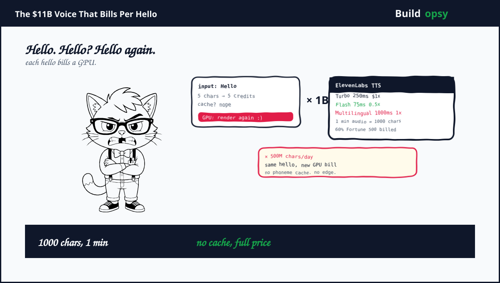
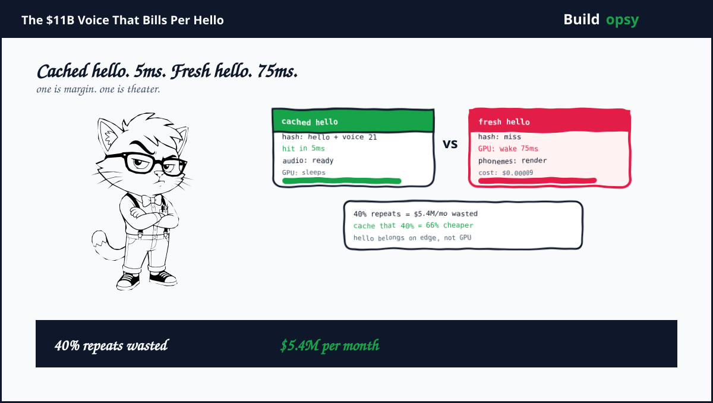

1. The Hello That Costs a Data Center
Hello is five characters. At ElevenLabs standard pricing that is five credits. The API accepts the text, runs it through a transformer that maps characters to audio and streams the result. The hello sounds human. It also sounds exactly like the hello you generated ten seconds ago for a different user, except you paid for it again.
The product promise is wonderful. Any voice in any language with any emotion from one minute of sample. The infrastructure consequence is brutal. Text to speech is the latency bottleneck for conversational AI. A 1000ms model sounds excellent and feels late. A 75ms Flash model feels present and sounds slightly less alive. Enterprises pick the fast one for agents and then pay per character at high volume to say the same greetings, the same hold music and the same sorry all day.
It is a heroic form of waste. Your call center says hello one million times and you render hello one million times. Phonemes are reusable. Your billing pretends they are not.
2. Why ElevenLabs Is the Right Unicorn Autopsy
Founded in 2022 by Mati Staniszewski and Piotr Dabkowski, ElevenLabs became Europe's third largest AI unicorn by early 2026. It raised $19M Series A in June 2023 at $100M, $80M Series B in Jan 2024 at $1.1B, $180M Series C in Jan 2025 at $3.3B led by a16z and ICONIQ Growth and $500M Series D in Feb 2026 at $11B led by Sequoia. Total funding $781M. Customers include employees at over 60% of Fortune 500. That is not a research demo. That is critical audio plumbing.
The company also publishes its trade. It offers three latency tiers. Multilingual v2 at 1000ms plus excellent quality and 1x cost. Turbo v2.5 at 250ms and good quality. Flash v2.5 at 75ms and acceptable quality at 0.5x cost. One minute of audio maps to about 1000 characters. Flash sacrifices prosodic range for speed and is priced for high volume conversation. The roadmap tells you the burn. The money raised goes to shrinking Flash to 50MB on iPhone NPU and to new music and dubbing models. The fastest model is still a centralized cloud model with 1 to 4 second jitter reports.
"We started by building a voice that could sound human - and we did. Today we are building foundational models across the full audio stack" Piotr Dabkowski said at the $11B round. The human voice was chapter one. Billing for it forever is chapter two.
3. Reconstructing the Machine
A request hits the ElevenAPI with text and a voice id. Routing picks the model. Scribe handles speech to text on the way in for agents, the LLM brain runs either pass through or custom mode, then Flash or Turbo renders audio. Streaming uses HTTP or WebSocket. The platform advertises up to 40% latency cut by routing through closer data centers. The voice still comes from a centralized cloud that must be warm, loaded and paid per character.
Billing is a three way split. TTS bills per character. Agents bill per minute of connection. LLM bills per token pass through. One conversational turn bills all three. A hello that uses Flash plus an LLM greeting plus a minute of holding bills characters plus tokens plus minutes for the same five character word. It is a beautiful pricing page and a black box invoice.
The reuse gap is where money evaporates. Hello plus hold music plus your help is on the way plus the same IVR menu is spoken identically for every caller. The phoneme sequence is identical. The mel spectrogram is identical. The audio bytes are identical. Yet each call renders fresh. No phoneme cache sits in front of the model. No edge cache serves the same utterance near the caller. No content hash dedupes identical prompts across tenants. The system treats identical input as a new creative act.
4. The Flash Tax You Pay to Sound Present
Flash at 75ms is the hero for conversational agents because 500ms breaks the illusion. The product win is real. The cost win is marketed as 0.5x. The architecture win is missing. Flash is cheaper per request because it runs a smaller model, not because it does less work for repeated input. Half price for the same repeated hello is still full waste. You discounted the wrong thing.
Latency jitter proves centralization hurts more than model size helps. Users report 1 to 4 second spikes based on load even on Flash. Edge competitors with pluggable models and SIP trunking get more deterministic latency because they push the model closer to the phone. ElevenLabs is the Apple of voice. Premium, integrated and ringing from a distant cloud that sometimes has a bad day.
The fix is not a fourth model with 40ms latency. It is never calling any model for a hello you have already rendered. Cache the phonemes, cache the audio and keep the model for the truly novel sentence. Most call center speech is not novel. It is the same 200 prompts said with slightly different names.
5. The RPS Model: How Many Hellos Does $330M Buy
Turn ARR into hellos with simple math.
Assume average revenue per thousand characters is $0.18 for blended Flash and Turbo. That is $0.00018 per character. At $330M ARR, yearly billed characters are about 1.83 trillion. Daily characters are about 5 billion. If one minute of audio equals 1000 characters, daily audio is 5 million minutes or about 83k hours of generated voice per day. That is the scale that makes 1000 years of generated audio plausible.
Convert to rates. Five billion characters per day is 57,870 characters per second average. Assume peak burst 6 times average when US business hours overlap EU. Modeled peak is 347k characters per second. At 5 characters per hello, that is about 69k hellos per second at peak before you count LLM tokens or connection minutes. The GPU must be ready for that rate even when most hellos are repeats.
| Workload | Assumption | Modeled result |
|---|---|---|
| Daily chars | $330M ARR at $0.18 per 1k chars | 5B chars |
| Avg chars per sec | 5B over 86400 sec | 58k per sec |
| Peak chars per sec | 6x burst | 347k per sec |
| Peak hellos per sec | 5 chars per hello | 69k per sec |
| Daily audio hours | 1000 chars per minute | 83k hours |
6. The Cost Model: Where Voice Costs More Than Words
Model a fleet for the 347k peak chars per second scenario.
Assume blended model cost of $0.00009 per character after Flash half price mix. Daily TTS compute is 5B times $0.00009 equals $450k per day or $13.5M per month. That is the API billed cost before platform overhead. GPU fleet, routing, storage and observability add another $2M per month. LLM pass through tokens for agent turns add roughly $1M per month. Total modeled platform cost lands near $16.5M per month for this ARR scale. It is a profitable $27.5M monthly revenue line and a very busy GPU fleet.
Without caching, identical hellos pay full price. Assume 40% of characters are repeated greetings and canned replies across tenants. At 40% repeat, daily wasted chars are 2B. At $0.00009 per char that is $180k per day or $5.4M per month of re rendering hello. That is not a rounding error. It is a second infrastructure bill hiding inside the first.
| Cost center | Modeled monthly | What moves it |
|---|---|---|
| TTS compute billed | $13.5M | blended price per char |
| GPU fleet overhead | $2M | centralized vs edge |
| LLM pass through | $1M | tokens per turn |
| Total scenario | $16.5M | |
| Wasted repeats at 40% | $5.4M | repeat rate |

7. The One Million RPS Thought Experiment
Normalize to one million TTS requests per second for one month. A month holds 2,592,000 seconds. Assume each request carries 20 characters average inbound plus 50kb audio outbound after compression.
In the current no cache shape, assume origin cost of $0.000015 per request for GPU time plus platform overhead for a short utterance. Current shaped bill is 1,000,000 times 2,592,000 times $0.000015 equals $38.88M per month.
My cached shape dedupes by phoneme hash and serves 60% from an edge phoneme cache with 5ms lookup before any model wake. Keep Flash for truly novel sentences only. Assume 40% reaches origin and origin rate falls to $0.00001 after smaller GPU class for cache misses. Core origin work becomes 400,000 times 2,592,000 times $0.00001 equals $10.37M per month. Add $2M for edge cache plus $1M for connection and LLM buffer. Proposed envelope is about $13.37M per month.
| At 1M RPS | Render every time | Phoneme cached |
|---|---|---|
| Origin renders | 1,000,000 per sec | 400,000 per sec after cache |
| Modeled rate | $0.000015 per req | $0.00001 per req |
| Core origin work | $38.88M | $10.37M |
| Edge cache and buffer | Included | $3M |
| Modeled monthly total | $38.88M | $13.37M |
| Difference | $25.51M per month, about 66 percent lower | |
5ms lookup
no GPU wake
reaches model
not for repeats
cached is faster
short hold
bill tokens once
deterministic
This figure appears after the cost model on purpose. First price hello. Then decide if hello deserves a GPU.
8. How I Would Cut the Bill Without Cutting the Voice
Hash the utterance and never render twice. Use text plus voice id plus prosody tags plus language as cache key. Store phoneme plus mel plus compressed audio. A held IVR prompt should be a hash hit, not a model call. At 40% repeat you save $5.4M per month before you touch model price.
Move the cache to the edge, not the model. Push hot phonemes to CDNs near callers. Central cache adds 40ms and still bills egress. Edge cache adds 5ms and kills the GPU wake entirely. The fastest voice is not Flash. It is a cache hit.
Keep Flash for novelty, not for greetings. Route only novel sentences to Flash or Turbo. Route canned prompts to cache. Your pricing page calls both voice. Your margin should treat them as different products with different costs.
Make the meter obvious. Today TTS plus per minute plus tokens is a black box bill. Expose characters plus cache hit ratio plus GPU seconds per request. Teams cannot optimize what the dashboard hides behind credits. Show hello as a line item. Watch how fast hello gets cached.
Push the model to the phone where hello lives. The Series D pitch is 50MB Flash on iPhone NPU. Do it for the top 200 prompts and pay zero network for hello. Central GPU is for the long tail of truly new speech. Hello lives on the device and the margin stays on your books.
9. The Verdict
ElevenLabs earned its $11B by making synthetic voice sound human. The quality gap is real and the enterprise list proves it. The cost gap is also real and the billing page proves it. Per character billing without phoneme caching turns every repeated hello into a fresh GPU job. Flash makes that job cheaper and faster. Cache would make it disappear.
The pattern generalizes. My Supabase teardown showed pooling decides Postgres cost. My Lovable teardown showed caching decides preview cost. Voice follows the same rule. Reuse the phoneme, reuse the prompt cache and reuse the layer before you scale the fleet. Quality wins customers. Caching keeps them profitable.
Hello should be rendered once and billed once. Not once per caller per second forever.
Sources and Method
Funding, ARR and model notes come from ElevenLabs posts and press linked below. TTS pricing and cost model is my own scenario math, not ElevenLabs billing. Validate with production measurements before capacity decisions.